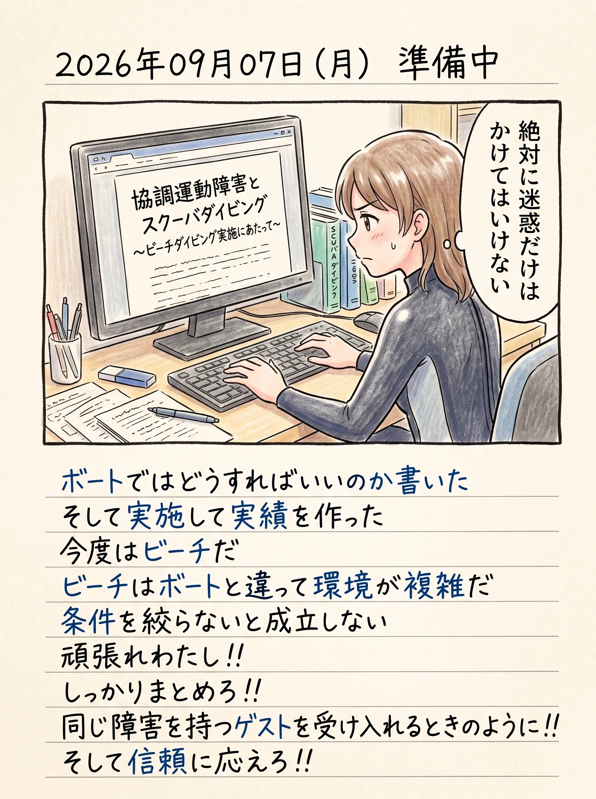

The road Orz passed by 2026 年 09 月
09 月 07 日 ( 月 )
Dive #212 絵日記 2026/09/07 (Mon) 協調運動障害とスクーバダイビング 〜ビーチダイブ実施の可能性と実現に向けて〜

ここで言う迷惑をかけてはいけないというのは事故に絶対になってはいけない、ってことです。事故にならない責任です。
事故になるのはそれは受け入れてくれる店を裏切ることになるから。
事故になるのは自分だけの問題ではないから。
それだけじゃなく、手帳を持っている人の今後のダイビングが拒否される道を作ってしまうから。
だから事故に結びつきそうなあらゆることを想定して排除します。
これは他の人への要求ではなく、ぼく自身のダイビングと関係者への人間としての矜恃です。
- Category :
- #Records of Orz's Road
- #絵日記
- #ダイビング
- #スクーバダイビング
- #リトレーニング
- #ダイバーとしての再起を賭けて
Dive #213 なぜ今回のリトレーニングに師匠を選ばなかったのか
なぜ今回のリトレーニングに師匠を選ばなかったのか。
今の師匠はリトレーニングではなくて、ぼくをファンダイブに連れて行こうとするから。
もうプロになるわけではないし、年齢が年齢だから先もさほどあるわけではない、楽しむだけで充分だろう、ということみたいだ。オーバーウェイトで入るのは写真を撮る人間が大半な今では普通のことだとも言われた。
でもぼくはそれが嫌だ。
安定して潜れていない今の自分がすごく嫌だ。
現役のアシスタントインストラクター時代、そしてダイブマスター候補生時代、インストラクターになってしまうだろうと言われてたあの頃。あの頃には戻れないとは思うけれど、せめて、お前は以前のように大丈夫だ、と言われるレベルには戻りたい。
せめて 27 年前の住崎のように、水深 -15m くらいからなら楽勝で緊急スイミングアセントで水面に戻れるくらいには戻りたい。
そして緊急スイミングアセントを必要としない、余裕と、判断力を回復させたい。
危ないダイバーであることがぼくには耐え難い。
だから必要なことをやることにした。
もう少し自分自身を整えて、また師匠のもとに戻りたい。
だから待っててください。師匠。
- Category :
- #Records of Orz's Road
- #絵日記
- #ダイビング
- #スクーバダイビング
- #リトレーニング
- #ダイバーとしての再起を賭けて